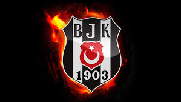

Galatasaray
Fenerbahçe
Beşiktaş
Ankaragücü
Galatasaray
30 Ekim 1905'te, Mekteb-i Sultani'de Mehmet Ata Bey'in dersi sırasında arkadaşlarıyla konuşan Ali Sami Yen, bir futbol kulübü kurmaya karar verir. Asım Sonumut, Reşat Şirvani, Refik Cevdet Kalpakçıoğlu, Abidin Daver ve Kamil Ulus Bey'in de ortaklığıyla; Refik Cevdet Kalpakçıoğlu asbaşkanlığında Galatasaray Spor Kulübü kurulur.
Bu dönemde oyunculardan her hafta birer kuruş toplanır, başkan Ali Sami Yen de futbol topuyla ilgilenirdi. Hatta domuz yağı ile temizlenen futbol topu hasar görünce; Ali Sami Yen ayakkabısının bir parçasını keserek yama yapmıştır. Cevdet Kalpakçıoğlu da formaları yıkardı. Kulübün ilk isminin Gloria ya da Audace koyulması istenmiştir;
ancak takımın oynadığı ilk maçında Rum rakibini 2-0 yenerken seyircilerin onlardan "Galata Sarayı Efendileri" diye söz etmesiyle bugünkü isim doğmuştur. Ali Sami Yen tarafından söylenen bir söz; Galatasaray Spor Kulübü'nün kuruluş ve varoluş amacını belirleyecektir:
"Maksadımız İngilizler gibi toplu bir hâlde oynamak, bir renge ve bir isme mâlik olmak ve Türk olmayan takımları yenmek."
Fenerbahçe
Fenerbahçe futbol takımı, Fenerbahçe Spor Kulübü'nün Süper Lig'de mücadele eden profesyonel futbol takımıdır.[2] Kulübün futbol dışında faaliyet gösterdiği diğer spor dalları basketbol, voleybol, atletizm, boks, kürek, yelken, yüzme, e-Spor ve masa tenisi'dir. Takım, iç saha maçlarını İstanbul Kadıköy'de bulunan 50.509 kişilik Fenerbahçe Şükrü Saracoğlu Stadyumu'nda yapmaktadır.[2] 1907 yılında bir spor kulübü olarak kurulan Fenerbahçe, Türkiye futbol tarihinin en başarılı ve en çok taraftarı olan spor kulüplerinden birisidir.[3][4] Takımın şu anki başkanı Ali Koç'tur.
Fenerbahçe'nin toplam 28 Türkiye şampiyonluğu bulunmaktadır.[5][6] Süper Lig'de 19 kez, Millî Küme'de 6, Türkiye Futbol Şampiyonası'nda ise 3 kez birinci olarak Türk futbol tarihinde en çok millî şampiyonluk yaşamış takımdır.[a] Ayrıca, 6 Türkiye Kupası ve 9 Türkiye Süper Kupası şampiyonluğu da bulunmaktadır.[7] 2012-13 sezonunda UEFA Avrupa Ligi'nde yarı finale çıkarak tarihinde bir Avrupa kupasındaki en iyi derecesini elde etti. 1968 yılında şampiyonluk yaşadığı Balkan Kupası Türkiye'nin ve kulüp tarihinin ilk Avrupa kupası oldu.
Takma adı Sarı Kanaryalar olan Fenerbahçe'nin Trabzonspor ve Beşiktaş gibi takımlarla rekabeti bulunsa da en büyük rakibi aynı şehirde bulunduğu Galatasaray'dır. Bu iki takım arasında gerçekleşen maçlar Kıtalararası Derbi olarak adlandırılır. Kulübün geleneksel forması düz, sarı lacivert çubuklu forma, beyaz şort ve yanları hafif renkli beyaz çoraplardan oluşur.

Beşiktaş
Beşiktaş, Beşiktaş Jimnastik Kulübü'nün Süper Lig'de mücadele eden futbol takımı.[7] 1903 yılında Bereket Jimnastik Kulübü (Asıl Çerkesçe ismi Bereketiqo olup bazı kurucuların mensup olduğu Çerkes sülalesinden gelmektedir, Türkçeye Bereket olarak çevirilmiştir.[8][9][10]) adıyla kurulan Beşiktaş JK'nin, Ağustos 1911'de kurulan şubesidir.[6] Maçlarını 2012-13 sezonuna kadar 32.086 kapasiteli İnönü Stadyumu'nda oynamıştır.[11] 2012-13 sezonu sonunda kulüp, yeni stad yapım çalışmaları başlatmıştır.[12] Armasında ay-yıldız taşıma izni verilen 3 Türk kulübünden biridir. Yurt içi ve yurt dışında gösterdiği performansı, kazandığı kupalar ve ilkleriyle Türkiye'nin en büyük futbol kulüplerinden birisidir.[13][14]
Beşiktaş'ın toplamda 15 Süper Lig, 9 Türkiye Kupası ve 8 Türkiye Süper Kupası şampiyonluğu bulunmaktadır. Ayrıca profesyonel lig öncesi 2 kez Türkiye Futbol Şampiyonası'nda, 3 kez de Millî Küme'de şampiyon olup tarihinde toplam 20 Türkiye şampiyonluğu yaşamıştır.[13] Takım ayrıca 1986-87 sezonunda Şampiyon Kulüpler Kupası'nda çeyrek finale çıkarak tarihinin en iyi derecesini elde etti.

Ankaragücü
MKE Ankaragücü, Ankara'nın Süper Lig'de mücadele eden futbol takımı. 1910 yılında kurulan[1] MKE Ankaragücü'nün, 1911'de kurulan tam anlamıyla 1922'de faaliyete geçen futbol şubesidir. Maçlarını 22.000 kapasiteli Eryaman Stadyumu'nda oynamaktadır. Türkiye'nin en eski ve en köklü futbol kulüplerinden birisidir.
Ankaragücü'nün bugüne dek kazandığı 1 Türkiye Futbol Şampiyonası, 2 Türkiye Kupası ve 1 Türkiye Süper Kupası şampiyonluğu bulunmaktadır.